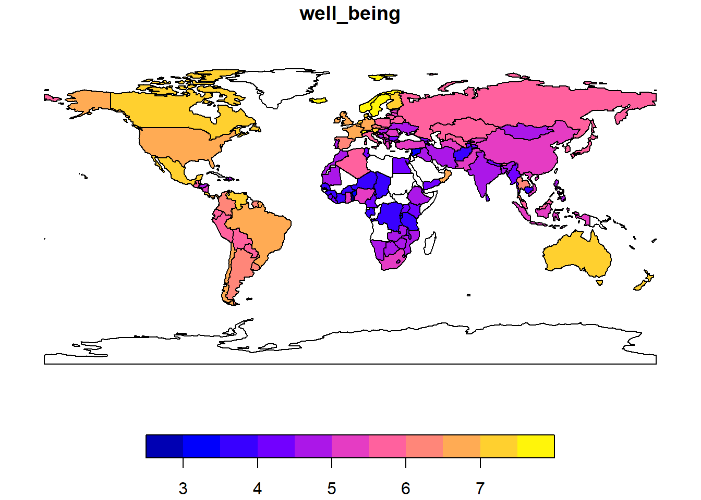
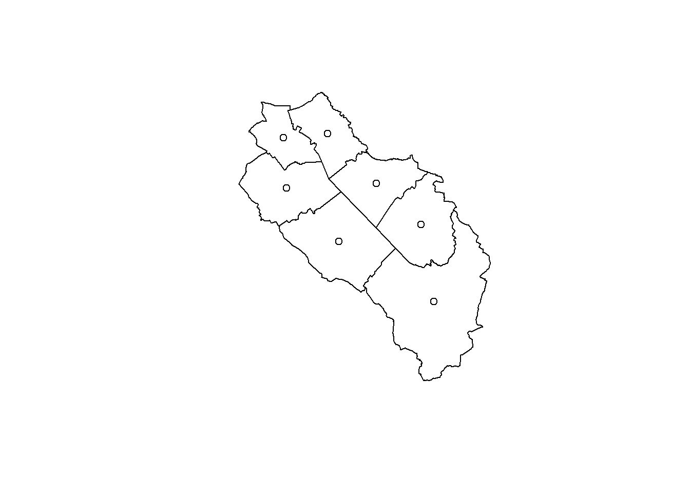
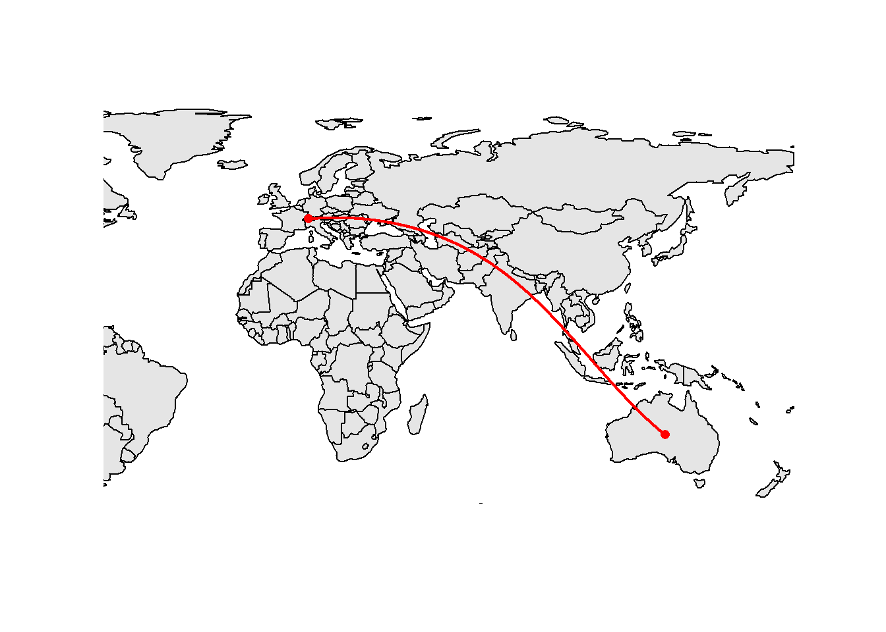
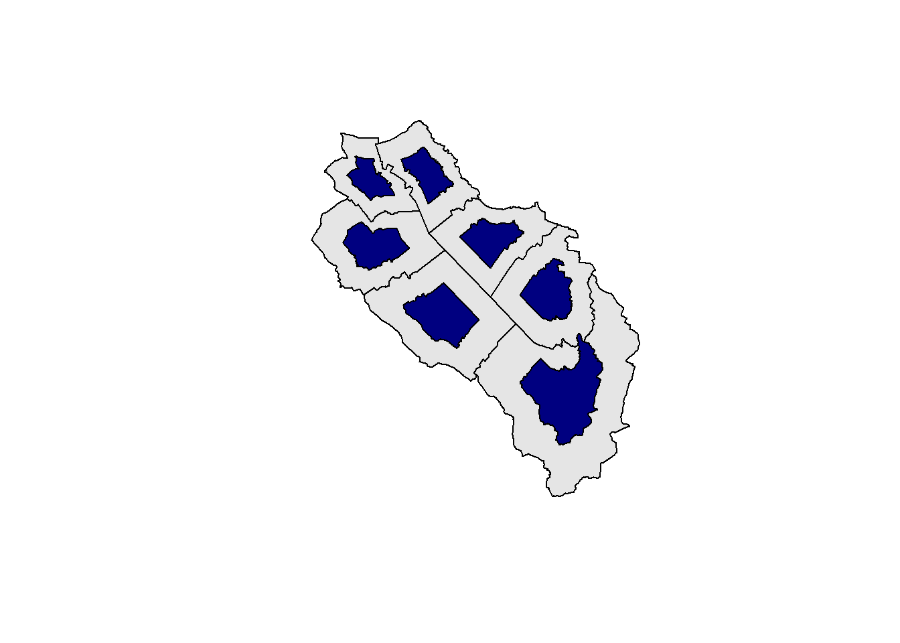

1 Preparation
In order to run the code for this workshop, you’ll need the following packages. You can use the following code to install them. All the required dependencies will be automatically installed.
Please also update to the latest version of R, otherwise you may get packages that are not fully up-to-date.
install.packages("sf")
install.packages("lwgeom")
install.packages("terra")
install.packages("spatstat.random")
install.packages("spdep")
install.packages("tmap")
install.packages("mapview")
install.packages("mapsf")You’ll also need to download the following data that we’ll use in some of the examples: https://quarto.org.
2 Introduction
When we work with geographic data we need to decide how to model real world objects or concepts (buildings, forests, elevation, etc.) before we can use them in a computer with a GIS (Geographic Information System) software. GIS people mainly use 2 main data models: vector and raster. Other models exist, such as TINs, point clouds or meshes, but we won’t cover them in this workshop.
Vector data is normally used for high precision data sets and can be represented as points, lines or polygons. Properties of the represented features are stored as attributes. The vector types you will use depends of course on your own data and on your analyses. For example: points could be appropriate for bird nests and sightings, lines for moving animals and linear structures (paths, rivers), and polygons for territories and land cover categories. Of course a river can also be modeled as a polygon if you’re interested in its width (or you can also store its width as an attribute of the line).
High precision doesn’t necessarily mean high accuracy! For example the coordinates of some points could be stored in meters with 5 decimals even though the measurement error was 2 meters.
Most vector data formats include some possibility to store information about measurement errors but this is actually very rarely used.
The best known format for storing vector data is the shapefile, an old and inefficient format developed by ESRI. Even though the shapefile format is still widely used, it has a lot of limitations and problems (listed on the following website: http://switchfromshapefile.org). Nowadays GIS specialists advise to replace it with better alternatives such as the GeoPackage format. Every modern GIS software can read and write GeoPackages and the format is also completely open-source. It is also published as a standard by the Open Geospatial Consortium (OGC) which makes it a future-proof alternative.
Raster data is basically an image divided into cells (pixels) of constant size, and each cell has an associated value. Satellite imagery, topographic maps and digital elevation models (DEM) are typical examples where the raster data model is appropriate. A raster data set can have several layers called bands, for example most aerial images have at least three bands: red, green and blue. In the raster data model, specific geographic features are aggregated to a given resolution to create a consistent data set, associated with a loss of precision. The resolution used to aggregate can have a large influence of some analyses and must be thought of carefully.
There exists thousands of different raster data formats. As of today I recommend using the GeoTiff format. It is widely used in the GIS world and every GIS software can read and write raster data in this format. Note that it is also possible to use the GeoPackage format to save raster data sets, however I would advise against using it since some GIS software won’t be able to read these rasters.
Vector data: use the GeoPackage format
Raster data: use the GeoTiff format
3 Vector data
3.1 Vector data model
The main vector types are points, lines and polygons (or a combination thereof) and the point is the base of all these types. For example a simple line consists of 2 connected points, similarly an ordered sequence of connected points will represent a more complex line (often called a polyline). A simple polygon will be modeled as an external ring, which is a special type of polyline where the first and last points are identical. In the case of lines and polygons we often speak of vertices to describe these points. Things can be a bit more complex, for example a polygon could have a hole which is modeled as an internal ring.
The Simple Feature standard (full documentation) was developed to be sure that we all speak the same language when describing vector elements. The specification describes 18 geometry types, but don’t worry only 7 of them will be useful for us. The following figure shows these 7 types (source: Lovelace et al., 2019):

A feature represents a geographic entity modeled by one of these types. For example a building would be a single feature of type POLYGON, while the whole Hawaii archipelago would be a single feature of type MULTIPOLYGON (but you could of course also model each island as type POLYGON). A single feature using the MULTI* types can have multiple elements but this is not mandatory. Most of the time we will use the default 2D version of these types. However it is possible to include additional numeric values such as the height of each point (Z values) or some kind of measurement error (M values). Note that most GIS software will ignore these values for the vast majority of spatial analyses.
The feature type is usually defined for the whole vector data set, and not per feature (well actually sf lets you do that but this will brings you all sorts of troubles). For example, if you know that your data set will contain POLYGON and MULTIPOLYGON features, then you will have to use the MULTIPOLYGON type for all of them.
In most GIS softwares (including R), simple features are internally encoded using the well-known binary (WKB) or well-known text (WKT) standards. As the name mentions, WKB is a binary format and hence not easily readable by normal humans. The WKT format is encoding exactly the same information as WKB, but in a more human friendly way. Here are some examples of WKT-encoded features (check the Wikipedia page if you need more):
- a point: POINT (10 5)
- a linestring made of 3 points: LINESTRING (1 1, 2 4, 5 10)
- a polygon (without a hole): POLYGON ((10 5, 10 9, 5 8, 4 2, 10 5))
- a multilinestring: MULTILINESTRING ((1 1, 2 4, 5 10), (2 2, 5 2))
The geometry is of course essential in order to have a spatial information but the vector data model also allows storing non-spatial attributes (often called attribute table) for each feature. As we will see, these tables are stored as data frames in R and each column will store some property of the related feature (identification number, name, etc.). Each row relates to a single spatial feature (which can consist of several geometries if its type is MULTI*). The following figure shows some examples (source: Tennekes & Nowosad, 2021):

3.2 A first look at vector data in R
Let’s have a look at how R stores a vector data set. The main classes and methods needed to work with spatial vector data are defined in the sf package (Pebesma, 2018). We will also load the tmap package (Tennekes, 2018) to have access to some spatial data sets.
library(tmap)
library(sf)Linking to GEOS 3.11.0, GDAL 3.5.3, PROJ 9.1.0; sf_use_s2() is TRUEWhen you first load the sf package, it will provide you with version information about some important open-source GIS libraries it uses. In a few rare cases, some functions will only be available if you use recent version of these libraries. If you use sf on Windows or Mac and install it from CRAN, they will be included inside the sf package and there’s no easy way to update them. These libraries are used in almost all open-source GIS software and even in some commercial ones. GDAL takes care of reading and writing your GIS files and can read 99.9% of all the existing GIS formats; GEOS is a Euclidean planar geometry engine and is used for all the common GIS analyses (intersection, union, buffer, etc.); PROJ is responsible for all the coordinate reference systems operations. The s2 library is a spherical geometry engine which is active by default for computations when using unprojected data.
The availability of the sf package was huge change in the small world of “R-Spatial”. In the old days we used a combination of several packages to process GIS vector data in R. The spatial classes (and some functions) were defined in the sp package, the import/export of data was managed by the rgdal package, and the geometric operations were available in the rgeos package. You’ll find a lot of code using these packages on the internet. Please refrain from using them since they’ll only be maintained until end of 2023 and will then probably be removed from CRAN. Moreover the sf package is definitely more powerful and much faster.
We will now load the World vector data set inside the tmap package and have a look at its structure.
data(World)
class(World)[1] "sf" "data.frame"names(World) [1] "iso_a3" "name" "sovereignt" "continent" "area"
[6] "pop_est" "pop_est_dens" "economy" "income_grp" "gdp_cap_est"
[11] "life_exp" "well_being" "footprint" "inequality" "HPI"
[16] "geometry" WorldSimple feature collection with 177 features and 15 fields
Geometry type: MULTIPOLYGON
Dimension: XY
Bounding box: xmin: -180 ymin: -89.9 xmax: 180 ymax: 83.64513
Geodetic CRS: WGS 84
First 10 features:
iso_a3 name sovereignt continent
1 AFG Afghanistan Afghanistan Asia
2 AGO Angola Angola Africa
3 ALB Albania Albania Europe
4 ARE United Arab Emirates United Arab Emirates Asia
5 ARG Argentina Argentina South America
6 ARM Armenia Armenia Asia
7 ATA Antarctica Antarctica Antarctica
8 ATF Fr. S. Antarctic Lands France Seven seas (open ocean)
9 AUS Australia Australia Oceania
10 AUT Austria Austria Europe
area pop_est pop_est_dens economy
1 652860.000 [km^2] 28400000 4.350090e+01 7. Least developed region
2 1246700.000 [km^2] 12799293 1.026654e+01 7. Least developed region
3 27400.000 [km^2] 3639453 1.328268e+02 6. Developing region
4 71252.172 [km^2] 4798491 6.734519e+01 6. Developing region
5 2736690.000 [km^2] 40913584 1.495003e+01 5. Emerging region: G20
6 28470.000 [km^2] 2967004 1.042151e+02 6. Developing region
7 12259213.973 [km^2] 3802 3.101341e-04 6. Developing region
8 7257.455 [km^2] 140 1.929051e-02 6. Developing region
9 7682300.000 [km^2] 21262641 2.767744e+00 2. Developed region: nonG7
10 82523.000 [km^2] 8210281 9.949082e+01 2. Developed region: nonG7
income_grp gdp_cap_est life_exp well_being footprint inequality
1 5. Low income 784.1549 59.668 3.8 0.79 0.42655744
2 3. Upper middle income 8617.6635 NA NA NA NA
3 4. Lower middle income 5992.6588 77.347 5.5 2.21 0.16513372
4 2. High income: nonOECD 38407.9078 NA NA NA NA
5 3. Upper middle income 14027.1261 75.927 6.5 3.14 0.16423830
6 4. Lower middle income 6326.2469 74.446 4.3 2.23 0.21664810
7 2. High income: nonOECD 200000.0000 NA NA NA NA
8 2. High income: nonOECD 114285.7143 NA NA NA NA
9 1. High income: OECD 37634.0832 82.052 7.2 9.31 0.08067825
10 1. High income: OECD 40132.6093 81.004 7.4 6.06 0.07129351
HPI geometry
1 20.22535 MULTIPOLYGON (((61.21082 35...
2 NA MULTIPOLYGON (((16.32653 -5...
3 36.76687 MULTIPOLYGON (((20.59025 41...
4 NA MULTIPOLYGON (((51.57952 24...
5 35.19024 MULTIPOLYGON (((-65.5 -55.2...
6 25.66642 MULTIPOLYGON (((43.58275 41...
7 NA MULTIPOLYGON (((-59.57209 -...
8 NA MULTIPOLYGON (((68.935 -48....
9 21.22897 MULTIPOLYGON (((145.398 -40...
10 30.47822 MULTIPOLYGON (((16.97967 48...We see the World object is stored as a data frame with an additional geometry column (note that the name of the geometry column doesn’t need to be ‘geometry’). The content of the geometry column is displayed using the WKT standard. R is also giving us more information, like the coordinate reference system used (more on that later) and the number of dimensions (i.e. XY, XYZ or XYZM).
It is also easy to plot the data using the usual command.
plot(World)
By default R will take the first 9 attributes of the sf object and plot them using the available geometries. Since these objects inherit from the data base class, you can use all the typical data frame functions such as summary, head, merge, rbind, etc. Subsetting is also possible using the standard [] operators. Therefore you can use the following code if you only want to plot the well-being index, for the whole world, only for countries with a high index, or just for Australia.
plot(World[,"well_being"])
plot(World[which(World$well_being > 6),"well_being"])
plot(World[which(World$name == "Australia"),"well_being"])Note that the color scale was adapted depending on the available values in the filtered data set. If you only need the geometries without any attributes, then you can use the st_geometry() function.
plot(st_geometry(World))
3.3 Structure of sf objects
Most of the time you won’t need to create your own sf objects from scratch since you’ll import some existing GIS data. But if you need to, there are special functions to help you. This is also a good way to get a better understanding of the structure of sf objects. The standard process is shown in the following figure (source: Lovelace et al., 2019):

You first need to create each feature geometry using some constructor functions. Each of these features will be of class sfg (simple feature geometry). Then you collect all these geometries in a list using the st_sfc() function. You get a new object of class sfc (simple feature list-column). After that you combine the newly created simple feature list-column with the attributes (stored as a data frame, or a tibble) using the st_sf() function in order to get an sf object.
Since this is rather abstract, let’s look at a simple example. Imagine we want to create a point data set containing three bird observations, and each observation will have the following attributes: species and sex. We start by creating our point geometries:
pt1 <- st_point(c(2657000, 1219000))
pt2 <- st_point(c(2658000, 1218000))
pt3 <- st_point(c(2659000, 1217000))Let’s have a look at what we’ve just created:
pt1POINT (2657000 1219000)class(pt1)[1] "XY" "POINT" "sfg" typeof(pt1)[1] "double"str(pt1) 'XY' num [1:2] 2657000 1219000Our first object is a 2D point (otherwise we would see XYZ or XYZM) of class sfg. If we look a bit more into the details of the structure, we see that it is actually stored as vector of type double (with length 2).
Now we need to collect our points inside an sfc object. This is simply a list of sfg objects with an associated coordinate reference system (CRS). Since we collected our data in Switzerland, we will use the standard Swiss coordinate reference system. As we will see later, most coordinate reference systems are identified by a specific number.
pts <- st_sfc(pt1, pt2, pt3, crs = 2056)Let’s have a look at our new creation:
ptsGeometry set for 3 features
Geometry type: POINT
Dimension: XY
Bounding box: xmin: 2657000 ymin: 1217000 xmax: 2659000 ymax: 1219000
Projected CRS: CH1903+ / LV95POINT (2657000 1219000)POINT (2658000 1218000)POINT (2659000 1217000)class(pts)[1] "sfc_POINT" "sfc" typeof(pts)[1] "list"str(pts)sfc_POINT of length 3; first list element: 'XY' num [1:2] 2657000 1219000This confirms that our sfc object is actually a list, and this object will be the geometry column of the soon to be created sf object. Since our object is a list, it is easy to extract individual elements if needed:
# Extract the second item of the list
pts[[2]]POINT (2658000 1218000)class(pts[[2]])[1] "XY" "POINT" "sfg" The feature geometries are defined and stored in an sfc object, now we just need to define the attributes of each feature. We store them in a data frame using the same order as the geometries.
pts_data <- data.frame(species = c("wallcreeper", "alpine chough", "kingfisher"),
sex = c("male", "female", "female"))
pts_data species sex
1 wallcreeper male
2 alpine chough female
3 kingfisher femaleAnd as a last step we combine the feature geometries with the related attributes using the st_sf() function. We now have a typical GIS data set stored as an sf object.
pts_sf <- st_sf(pts_data, geometry = pts)
pts_sfSimple feature collection with 3 features and 2 fields
Geometry type: POINT
Dimension: XY
Bounding box: xmin: 2657000 ymin: 1217000 xmax: 2659000 ymax: 1219000
Projected CRS: CH1903+ / LV95
species sex geometry
1 wallcreeper male POINT (2657000 1219000)
2 alpine chough female POINT (2658000 1218000)
3 kingfisher female POINT (2659000 1217000)Since everything is stored as lists, it is again easy to access individual elements of the sf object:
# Extract the 3rd geometry
pts_sf$geometry[[3]]POINT (2659000 1217000)We process similarly to create other geometry types from scratch, the only difference is that we now need matrices to store the vertices of the lines and polygons instead of a simple vector, and for multilinestrings, (multi-)polygons and geometry collections, we need more lists to encapsulate everything. If you’re not sure how to create geometries, the sf documentation provides examples for all the geometry types. Look for the following functions: st_point(), st_linestring(), st_polygon(), st_multipoint(), st_multilinestring(), st_multipolygon(), st_geometrycollection(). Here’s a more complex example showing how to create a multipolygon (including one geometry with a hole) inside a sfg object. The next steps (collecting geometries in a sfc object, adding attributes and store as a sf object) are exactly the same as before.
# rbind creates matrices and makes the coding easier
pol1_border <- rbind(c(1, 5), c(2, 2), c(4, 1), c(4, 4), c(1, 5))
pol1_hole <- rbind(c(2, 4), c(3, 4), c(3, 3), c(2, 3), c(2, 4))
pol1 <- list(pol1_border, pol1_hole)
pol2 <- list(rbind(c(0, 2), c(1, 2), c(1, 3), c(0, 3), c(0, 2)))
multipolygon_list <- list(pol1, pol2)
multipol <- st_multipolygon(multipolygon_list)
multipolMULTIPOLYGON (((1 5, 2 2, 4 1, 4 4, 1 5), (2 4, 3 4, 3 3, 2 3, 2 4)), ((0 2, 1 2, 1 3, 0 3, 0 2)))plot(multipol, col = "navy")
4 Raster data
As we saw above, a raster data set is basically an image, which is the same as a grid of pixels. Most raster data sets you will encounter will have a constant pixel size (also called resolution) and we will only focus on these during this workshop. However don’t forget that other kind of grids, for example sheared or curvilinear, also exist. This is sometimes needed depending on the coordinate reference system used to store the data, or can be caused by some reprojections.
Rasters are perfect for storing continuous values contained in a large area (called the extent of the raster). Digital elevation models are a typical example of such data, each cell is used to store an elevation value. You will also find rasters containing discrete values, these are often used to store landcover or landuse data sets. Note that, unlike vector data, it is impossible to store overlapping features in the same data set. We saw that vector data sets can store multiple attributes for a single feature. We can use a similar technique for raster data sets with the help of raster bands. You can think of raster bands as different layers of the same grid, each layer containing a different information. This is mainly use for spectral data, for example the red, green and blue intensity values in an aerial picture; satellite imagery will have even more bands depending on the number of sensors. Multiband rasters are also often used to store environment variables that change through time (e.g. a temperature raster, with one band per day). Such rasters are often called datacubes.

Performing computations on raster data sets is usually very efficient and faster than using vector data, this is due to the fact that rasters are stored in some kind of matrix formats with some extra information (such as the coordinate reference system and the origin of the raster). It this thus possible to use highly efficient linear algebra libraries. The mathematical operations performed on raster cells are called map algebra.
For this workshop we will use the terra package to work with raster data. This package has everything needed to import, analyses, visualize and export raster data sets. Like the sf package, it is also using the GDAL library for the import/export operations, which means it can open almost every raster data format. Unlike the sf package, terra will not import the full data sets in memory but only create a pointer to the data and then read smaller blocks of data successively. This allows working with very large rasters with a relatively small memory footprint. The amount of functions available in the terra package is similar to typical GIS software.
Since terra only stores a pointer to the raster data set, this means the actual data set won’t be included if you save your session in an R workspace (.Rdata files). If you really want to include it in your workspace, you can use the wrap() function. Note that this is also needed if you want to pass raster data over a connection that serializes, e.g. to a computer cluster.
There is another famous R package to process raster data, the stars package. It is especially useful if you need to work with “irregular” rasters (sheared, curvilinear, etc.) or with complex datacubes. It is also tidyverse-friendly and the syntax is closed to the one use in sf. However the number of available functions is (still) much lower than in terra. If you need to use both packages, it is fortunately easy to convert raster objects from terra to stars (using the function st_as_stars()), and the other way round (using the function rast()).
A revolution happened in 2010 in the small world of R-Spatial when the raster package was released. People were able to perform analyses using raster data sets in R instead of using a standard GIS software. The package has been maintained during many years, and many functions were added. However its developer decided to create a new package from scratch in order to improve speed and memory efficiency, the terra package was born. You will often find a lot of R code using the raster package on the web. Fortunately it is quite easy to adapt code written for the raster package to terra. The functions have similar names (sometimes even identical) and everything that was available in raster should also be available in terra. Actually the recent versions of raster even use terra in the background instead of the original raster code.
5 Coordinate reference systems
The majority of normal people will get scared if there’s some problem to solve involving coordinate reference systems or projections. That’s why I will keep this part really short and only show you the stuff you will need to perform standard GIS analyses with R. If you want to read more about this (extremely interesting) topic, I invite to read the following book chapters: https://geocompr.robinlovelace.net/spatial-class.html#crs-intro and https://r-tmap.github.io/tmap-book/geodata.html#crs.
There is a famous expression saying “spatial is special”… One of the main reasons is that such data will have an associated location and you thus need to a reference frame to describe this location. This reference frame is called a coordinate reference system (CRS) in the GIS world. CRSs can be either geographic or projected.
When you’re working with GIS data, you should always know the CRS you’re using. Otherwise coordinates are just numbers without a reference frame. When you share GIS data, make sure the CRS is always defined in the data set or documented in some other way. The CRS of a vector data set can be queried with the st_crs() function, for a terra object you should use the crs() function.
A geographic CRS will identify locations on a spheroid or an ellipsoid using 2 values: latitude and longitude. The shape of the Earth is actually a geoid, but it is too complex to perform computations and thus one has to use approximations. The spheroid is making the assumptions that the Earth is a sphere, while the ellipsoid is a better approximation accounting for the fact that our planet is a bit compressed. Geographic coordinate systems are not using a projection! All the computations (distances, buffers, etc.) have to happen on the spheroid/ellipsoid which makes things more complex. It is easy to make mistakes when working with geographic CRSs, and even smart people fell in this trap (e.g. https://georeferenced.wordpress.com/2014/05/22/worldmapblunders).
Projected CRSs are based on geographic CRSs but include an additional projection step on a flat surface. When using a projected CRS, locations are described using Cartesian coordinates called easting and northing (x and y). Projecting a spherical or ellipsoidal surface on a plane will cause deformations. These will affect four properties of the surface: areas, distances, shapes and directions. A projected CRS can preserve only one or two of these properties. There exists a ton of different projections and all of them make different compromises, some are even totally useless (check this beautiful xkcd comic: https://xkcd.com/977). Choosing a projection can be challenging, especially if your data covers a very large area. The following websites allow you to visualize the main projection types: https://www.geo-projections.com and https://map-projections.net/singleview.php. The second website also provides a nice tool to visualize distortions called a Tissot indicatrix. Fortunately, if your data is within a “smallish” area, it is relatively easy to find a good projected CRS that has only minimal distortions. Almost every country has its own recommended projected CRS (or CRSs), and if your data covers several countries, you can use some UTM (Universal Transverse Mercator) coordinate systems.
It is almost always easier to work with a projected CRS, except if your data is really global (or covering a really large area, like a continent). Moreover, most GIS software will (still) make the assumption that you’re data is on a flat plane, even if you’re working with a geographic CRS. The sf package is kind of an exception since it will actually perform calculations on a spheroid if you use a geographic CRS, thanks to the s2 library.
The CRS used by almost all mapping websites (OpenStreetMap, Google Maps, etc.) should never be used for any analysis. It is a slightly modified version of the Mercator projection called Web Mercator or Pseudo-Mercator. It has some advantages allowing good visualization speed, but the distortions are massive. Check the following website: https://www.thetruesize.com.
With so many CRSs available, we need a way to classify them. That’s what the EPSG (European Petroleum Survey Group) started doing a few years ago. They collected and documented most available CRSs in a data set which is now called the EPSG Geodetic Parameter Dataset (https://epsg.org/home.html). In this data set, every CRS has a unique identification number that can be used in a GIS software instead of writing the full definition of the CRS. The best available transformations between CRSs are also defined. Sadly this data set is still missing a few interesting CRSs and was thus completed by other companies such as ESRI. This is the reason why you’ll sometimes see ESRI codes instead of EPSG for some CRSs. The following CRSs are the most important for us:
| Code | Name | Description |
|---|---|---|
| 2056 (EPSG) | CH1903+/LV95 | Projected CRS currently used in Switzerland |
| 21781 (EPSG) | CH1903/LV03 | Former projected CRS used in Switzerland, you will still find data sets using this one |
| 4326 (EPSG) | WGS84 | Geographic CRS used for most global data sets, and by GPS devices |
| 3857 (EPSG) | Pseudo-Mercator | Projected CRS used by online maps |
| 8857 (EPSG) | Equal Earth Greenwich | Nice equal-area projection for world maps |
| 54030 (ESRI) | Robinson | Aesthetically pleasing projection for world maps |
When looking for examples on the web, you will often find code using what is called a proj4string to define a CRS or to reproject data. For example the proj4string for the current Swiss CRS looks like this: +proj=somerc +lat_0=46.9524055555556 +lon_0=7.43958333333333 +k_0=1 +x_0=2600000 +y_0=1200000 +ellps=bessel +towgs84=674.374,15.056,405.346,0,0,0,0 +units=m +no_defs +type=crs. This was the standard way of describing CRSs until a few years ago. You should NOT use these strings, instead always use the EPSG number to be on the safe side. Otherwise you may get small to medium position errors when reprojecting your data.
6 Tips and tricks for vectors
6.1 Reading and writing vector data
We had a look at the gory details of the internal structure sf objects. However most of the time you will not create such objects on your own but rather rely on the sf package to create the right structure when you import existing GIS data. The sf package is using the GDAL (Geospatial Data Abstraction Library) library to read and write GIS files, and this means you will be able to import almost all existing GIS vector formats. Note that the vector part of the GDAL library is often called OGR. Sometimes you will not get a standard GIS data set but a simple CSV (or Excel) file containing coordinates and related attributes. We will first see how to import these different data types in order to use them with the sf package, and then how to export sf objects in a standard GIS format.
6.1.1 Importing a GeoPackage
The GeoPackage format is the best available open format to store vector data. It is based on the SQLite database format which is probably one of the most used file-based database nowadays. You can think of it as a special folder containing one or several GIS data sets. Since we normally don’t know in advance if a GeoPackage contains one or more data sets, we first have to inspect it.
st_layers("data/geodata.gpkg")Driver: GPKG
Available layers:
layer_name geometry_type features fields crs_name
1 streets Multi Line String 7690 3 CH1903+ / LV95
2 landcover Multi Polygon 1038 2 CH1903+ / LV95
3 buildings Multi Polygon 14125 2 CH1903+ / LV95
4 municipalities Multi Polygon 7 3 CH1903+ / LV95
5 wtf Polygon 3 0 CH1903+ / LV95You should not always trust the reported number of features. Some GIS format such as the GeoPackage report this number, some don’t. If the GeoPackage was produced by a software that doesn’t properly implement the standard, the reported number of features can be wrong (but this shouldn’t have any other bad consequence). If you want to be sure to get the correct number, you can use the do_count = TRUE argument of the st_layers() function, but this will be slower.
To read the data, you use the st_read() function, the first argument is the path of the GeoPackage, and the second argument is the layer you want to import. The function will return a sf object. By default you’ll get some information about the data being imported. If you don’t need them, you can use the argument quiet = TRUE.
muni <- st_read("data/geodata.gpkg", "municipalities")Reading layer `municipalities' from data source
`/Users/jguelat/Desktop/R-GIS/data/geodata.gpkg' using driver `GPKG'
Simple feature collection with 7 features and 3 fields
Geometry type: MULTIPOLYGON
Dimension: XY
Bounding box: xmin: 2648317 ymin: 1213352 xmax: 2660750 ymax: 1227618
Projected CRS: CH1903+ / LV95streets <- st_read("data/geodata.gpkg", "streets", quiet = TRUE)
muniSimple feature collection with 7 features and 3 fields
Geometry type: MULTIPOLYGON
Dimension: XY
Bounding box: xmin: 2648317 ymin: 1213352 xmax: 2660750 ymax: 1227618
Projected CRS: CH1903+ / LV95
bfs name popsize geom
1 1093 Neuenkirch 7194 MULTIPOLYGON (((2654554 121...
2 1094 Nottwil 4089 MULTIPOLYGON (((2654554 121...
3 1102 Sempach 4186 MULTIPOLYGON (((2656062 121...
4 1095 Oberkirch 5014 MULTIPOLYGON (((2649729 122...
5 1084 Eich 1610 MULTIPOLYGON (((2654640 122...
6 1099 Schenkon 3088 MULTIPOLYGON (((2652397 122...
7 1103 Sursee 10382 MULTIPOLYGON (((2648801 122...We see some basic information about the data set, and the first features are shown as well with all the attributes. The municipalities data set in an extract of the swissBOUNDARIES3D provided by Swisstopo, the streets data set is an extract of the swissTLM3D also provided by Swisstopo.
6.1.2 Importing a Shapefile
If you really need to import a Shapefile, you can use the same function. Since Shapefiles cannot contain more than one data set, we only need to provide the first argument of the function. A Shapefile consists of several file with different extensions (.shp, .shx, etc.), we use the .shp extension by default when importing.
muni2 <- st_read("data/municipalities.shp", quiet = TRUE)
muni2Simple feature collection with 7 features and 3 fields
Geometry type: POLYGON
Dimension: XY
Bounding box: xmin: 2648317 ymin: 1213352 xmax: 2660750 ymax: 1227618
Projected CRS: CH1903+ / LV95
fid bfs name geometry
1 1 1093 Neuenkirch POLYGON ((2654554 1217985, ...
2 2 1094 Nottwil POLYGON ((2654554 1217985, ...
3 3 1102 Sempach POLYGON ((2656062 1219916, ...
4 4 1095 Oberkirch POLYGON ((2649729 1221262, ...
5 5 1084 Eich POLYGON ((2654640 1224638, ...
6 6 1099 Schenkon POLYGON ((2652397 1224195, ...
7 7 1103 Sursee POLYGON ((2648801 1225672, ...This is actually the same data set as the one in the GeoPackage, however we seen that sf is now using polygons instead of multipolygons. This is caused by the fact that the Shapefile format does not distinguish properly between the two types. You can thus have a combination of polygons and multipolygons in the same data set.
6.1.3 Importing from a PostGIS database
PostGIS is a famous open-source extension for the PostgreSQL database management system. It allows storing all kind of GIS data inside a database and perform hundreds of typical GIS analyses. The Swiss Ornithological Institute is using PostGIS to store almost all its bird data and a lot of other GIS data sets. If you have a laptop provided by the institute and you have access to the institute internal network (via cable or private Wi-Fi, not the public one), you should be able to run the following code.
First we need to load the RPostgres package which provides function to access PostgreSQL databases (and hence PostGIS, too). There is another package providing similar functionality called RPostgreSQL, but in my opinion the RPostgres is better maintained and I experienced less problems.
After storing all the connection details in some variables, we can finally create a connection to the database using the dbConnect() function.
library(RPostgres)
# Login data
user <- "gast_vowa"
password <- scan("/Users/jguelat/Desktop/pass.txt", what = "character", quiet = TRUE)
host <- "dbspatialdata1"
database <- "research"
# Connection to the database
dbcon <- dbConnect(Postgres(), dbname = database, host = host, user = user, password = password)After that we need to import the data with a query, using again the st_read() function. Note that the first argument of the function must be the database connection object. The first possibility consists of importing the whole layer (called table in the database lingo) with all its attributes. This is what we do for the cantons1 data set. We need to use the Id() function to specify the location of the table inside the database. In a PostgreSQL database, a schema is a bit like a folder where we store tables, this allows us to implement some structure inside the database. In our case the table cantonal_boundaries_ch is stored inside the schema perimeter. Note that we don’t need the Id() function if the table are stored in the public schema.
We can also specify a SQL query to import the data, like for the cantons2 data set. Using this kind of query, we are fully flexible. We can for example specify the attributes we want to import, specific data filters, we can even join different tables together (by attributes or even spatially). Once again we have to specify the schema, but this is done a bit differently.
Once we have our sf objects, we still need to disconnect the database. The cantonal_boundaries_ch data set contains all the cantonal boundaries in Switzerland. The data is provided by Swisstopo (swissBOUNDARIES3D).
# Load cantonal boundaries
cantons1 <- st_read(dbcon, layer = Id(schema = "perimeter", table = "cantonal_boundaries_ch"))
cantons2 <- st_read(dbcon, query = "SELECT id, name, geom
FROM perimeter.cantonal_boundaries_ch
WHERE name = 'Fribourg'")
# Disconnect database
dbDisconnect(dbcon)
# Show sf objects
cantons1
cantons26.1.4 Importing a CSV file with coordinates
If you have a table containing coordinates of point data (e.g. sites or bird sightings), you should use the st_as_sf() function. The first argument should be the dataframe containing the data, and you also need to specify the names of the columns containing the geographic coordinates, and the CRS used. This data set was extracted from the bird sightings database of the Swiss Ornithological Institute.
obs <- read.csv("data/observations.csv")
head(obs) species_id name date x y
1 4240 Eurasian Blackbird 2022-04-12 2658433 1220946
2 3800 Eurasian Blue Tit 2022-04-12 2658442 1221138
3 4240 Eurasian Blackbird 2022-05-09 2658607 1221189
4 4240 Eurasian Blackbird 2022-05-09 2658597 1221137
5 4240 Eurasian Blackbird 2022-05-09 2658569 1220956
6 3800 Eurasian Blue Tit 2022-05-09 2658476 1220904obs <- st_as_sf(obs, coords = c("x", "y"), crs = 2056)
obsSimple feature collection with 530 features and 3 fields
Geometry type: POINT
Dimension: XY
Bounding box: xmin: 2649549 ymin: 1218571 xmax: 2660110 ymax: 1225531
Projected CRS: CH1903+ / LV95
First 10 features:
species_id name date geometry
1 4240 Eurasian Blackbird 2022-04-12 POINT (2658433 1220946)
2 3800 Eurasian Blue Tit 2022-04-12 POINT (2658442 1221138)
3 4240 Eurasian Blackbird 2022-05-09 POINT (2658607 1221189)
4 4240 Eurasian Blackbird 2022-05-09 POINT (2658597 1221137)
5 4240 Eurasian Blackbird 2022-05-09 POINT (2658569 1220956)
6 3800 Eurasian Blue Tit 2022-05-09 POINT (2658476 1220904)
7 4240 Eurasian Blackbird 2022-05-09 POINT (2658514 1221205)
8 3800 Eurasian Blue Tit 2022-05-09 POINT (2658517 1221195)
9 4240 Eurasian Blackbird 2022-05-23 POINT (2658570 1221219)
10 4240 Eurasian Blackbird 2022-05-23 POINT (2658455 1220911)6.1.5 Exporting to GeoPackage
To export vector data, you need to use the st_write() function. Like the st_read() function, it uses the GDAL library, so you’ll be able to export in many different formats. You can specify the format explicitely, otherwise sf will try to guess it based on the file extension. For a GeoPackage, you need to specify the name of the GeoPackage first (it will be automatically created if it doesn’t exist) and the name of the data set that will be stored inside the GeoPackage. If you specify a GeoPackage that already exists, the data set will be added to it as a new table.
st_write(obs, "export/birds.gpkg", "observations")Writing layer `observations' to data source `export/birds.gpkg' using driver `GPKG'
Writing 530 features with 3 fields and geometry type Point.obs2 <- obs[1:10,]
st_write(obs2, "export/birds.gpkg", "observations2", quiet = TRUE)
st_layers("export/birds.gpkg")Driver: GPKG
Available layers:
layer_name geometry_type features fields crs_name
1 observations Point 530 3 CH1903+ / LV95
2 observations2 Point 10 3 CH1903+ / LV95If you want to delete a data set, you can use the st_delete() function. Think twice before doing it, there will be no warning!
st_delete("export/birds.gpkg", "observations2")Deleting layer `observations2' using driver `GPKG'6.1.6 Exporting to Shapefile
Please don’t!
6.2 Basic geometric computations
In this section we’ll see how to perform some basic geometric computations on spatial data. For example let’s how we can compute the area of polygons of the length of lines.
st_area(muni)Units: [m^2]
[1] 26267403 14834107 11676584 10954968 9218391 7710103 6050585head(st_length(streets))Units: [m]
[1] 1915.1026 378.9425 345.9435 1836.5854 901.2759 232.4974Note that the results always have a unit of measurement. This is a feature that is provided by sf and will occur will all functions giving some sort of measurement. This is compatible with the units package which allows easy conversions between different unit types. However this can sometimes be a problem if you need a “raw” value. In this case you can use the as.numeric() function to remove the units.
For some strange reason, there is no function in sf to compute the perimeter of polygons. To do that you’ll need the st_perimeter() function in the lwgeom package which gives access to some functions available in the PostGIS database.
library(lwgeom)Linking to liblwgeom 3.0.0beta1 r16016, GEOS 3.11.0, PROJ 9.1.0st_perimeter(muni)Units: [m]
[1] 29717.62 17281.70 16758.24 15754.38 14897.75 15462.88 13398.87Computing the centroid of polygons is another useful operation that is easily computed using the st_centroid() function.
muni_centroid <- st_centroid(muni)Warning in st_centroid.sf(muni): st_centroid assumes attributes are constant
over geometries of xplot(st_geometry(muni))
plot(st_geometry(muni_centroid), add = TRUE)
Sometimes we also need to know the coordinates of the sf objects we’re using. For points we of course get the coordinates of the points, for lines and polygons we get the coordinates of the vertices, with additional columns showing how to reconstruct the features.
st_coordinates(muni_centroid) X Y
1 2657961 1217280
2 2653276 1220227
3 2657334 1221089
4 2650683 1222874
5 2655114 1223114
6 2652705 1225584
7 2650517 1225371head(st_coordinates(muni)) X Y L1 L2 L3
[1,] 2654554 1217985 1 1 1
[2,] 2654481 1218031 1 1 1
[3,] 2654492 1218051 1 1 1
[4,] 2654495 1218063 1 1 1
[5,] 2654493 1218067 1 1 1
[6,] 2654494 1218083 1 1 1Centroid can be used to place labels inside polygons, but don’t forget that polygons with strange shapes may not contain their centroid. If for some reason you need to be sure to have the point inside the polygon, use the st_point_on_surface() function.
Unfortunately geometric computations are not always that easy… Let’s have a look at another example. We load another polygon layer and try to compute the area of each polygon.
temp <- st_read("data/geodata.gpkg", "wtf", quiet = TRUE)
plot(temp, col = 1:nrow(temp))
st_area(temp)Units: [m^2]
[1] 547988.3 200939.1 0.0Oops, these polygons look big enough but one of them seems to have an area of 0… Why is this happening? We need to talk a bit about geometric validity…
6.3 Geometric validity
When we had a look a the vector data model, we discovered the Simple Feature standard but we forgot an important part: geometric validity. Validity is defined a bit differently depending on the geometry engine used for the computations. First the good news: points are always valid! Lines are always valid for the GEOS engine used by sf but they are considered invalid by QGIS if they have self-intersections (such lines are called non-simple). Polygons are definitely invalid if they have self-intersections (like our example). The other invalid cases are shown on this website: https://postgis.net/docs/using_postgis_dbmanagement.html#Valid_Geometry. Using invalid geometries can be problematic for some analyses, such as computing areas.
Normally we should expect official data sets to be valid but this is often not the case. You can check the validity of each feature using the st_is_valid() function. If you want a short description of the problems, you can add the argument reason = TRUE.
tempSimple feature collection with 3 features and 0 fields
Geometry type: POLYGON
Dimension: XY
Bounding box: xmin: 2656313 ymin: 1219730 xmax: 2659317 ymax: 1221618
Projected CRS: CH1903+ / LV95
geom
1 POLYGON ((2656382 1221396, ...
2 POLYGON ((2656903 1220285, ...
3 POLYGON ((2658317 1221618, ...st_is_valid(temp)[1] TRUE TRUE FALSEst_is_valid(temp, reason = TRUE)[1] "Valid Geometry"
[2] "Valid Geometry"
[3] "Self-intersection[2658817 1221117.875]"If there are only a few invalid features, we can correct them manually in QGIS. But sometimes this is not feasible and we need some automatic way of correcting. This is where the st_make_valid() function shines. Even though it’s fully automatic, it will perform the appropriate changes 99% of the time.
temp_valid <- st_make_valid(temp)
st_is_valid(temp_valid)[1] TRUE TRUE TRUEtemp_validSimple feature collection with 3 features and 0 fields
Geometry type: GEOMETRY
Dimension: XY
Bounding box: xmin: 2656313 ymin: 1219730 xmax: 2659317 ymax: 1221618
Projected CRS: CH1903+ / LV95
geom
1 POLYGON ((2656382 1221396, ...
2 POLYGON ((2656903 1220285, ...
3 MULTIPOLYGON (((2658317 122...st_geometry_type(temp_valid)[1] POLYGON POLYGON MULTIPOLYGON
18 Levels: GEOMETRY POINT LINESTRING POLYGON MULTIPOINT ... TRIANGLEst_geometry_type(temp_valid, by_geometry = FALSE)[1] GEOMETRY
18 Levels: GEOMETRY POINT LINESTRING POLYGON MULTIPOINT ... TRIANGLEWhen we look at the corrected data set, we see that the invalid polygon was converted to a multipolygon. We can also check it using the st_geometry_type() function. This is however a problem since we normally don’t want a data set with mixed geometry types. When we use the by_geometry = FALSE argument, we see that sf is now using a generic GEOMETRY type for the data set. The solution would be to convert all the other polygons to multipolygons.
6.4 Vector type casting
Changing the type of vector features is done with the st_cast() function. We can now solve our previous problem and convert everything to multipolygons (the existing multipolygon will be left untouched). Using the st_as_text() function we can see the WKT representation of the features geometry, and confirm that we’re now using the same vector type for all features.
temp_multipoly <- st_cast(temp_valid, to = "MULTIPOLYGON")
st_as_text(st_geometry(temp_valid))[1] "POLYGON ((2656382 1221396, 2657007 1221587, 2657250 1221414, 2657389 1221014, 2656730 1220824, 2656313 1221084, 2656382 1221396))"
[2] "POLYGON ((2656903 1220285, 2657441 1220077, 2657632 1220459, 2657754 1220129, 2657458 1219730, 2656903 1220285))"
[3] "MULTIPOLYGON (((2658317 1221618, 2658817 1221118, 2658317 1220618, 2658317 1221618)), ((2658817 1221118, 2659317 1221618, 2659317 1220618, 2658817 1221118)))"st_as_text(st_geometry(temp_multipoly))[1] "MULTIPOLYGON (((2656382 1221396, 2657007 1221587, 2657250 1221414, 2657389 1221014, 2656730 1220824, 2656313 1221084, 2656382 1221396)))"
[2] "MULTIPOLYGON (((2656903 1220285, 2657441 1220077, 2657632 1220459, 2657754 1220129, 2657458 1219730, 2656903 1220285)))"
[3] "MULTIPOLYGON (((2658317 1221618, 2658817 1221118, 2658317 1220618, 2658317 1221618)), ((2658817 1221118, 2659317 1221618, 2659317 1220618, 2658817 1221118)))"st_geometry_type(temp_multipoly, by_geometry = FALSE)[1] MULTIPOLYGON
18 Levels: GEOMETRY POINT LINESTRING POLYGON MULTIPOINT ... TRIANGLEWe can go a bit further and convert our multipolygons to other types… Note: for some reasons, it is not possible to convert a multipolygon directly to a line. You’ll need to convert it to a multiline object first.
temp_poly <- st_cast(temp_multipoly, to = "POLYGON")
temp_multiline <- st_cast(temp_multipoly, to = "MULTILINESTRING")
temp_line <- st_cast(temp_multiline, to = "LINESTRING")
temp_multipts <- st_cast(temp_multipoly, to = "MULTIPOINT")
temp_pts <- st_cast(temp_multipoly, to = "POINT")
temp_polySimple feature collection with 4 features and 0 fields
Geometry type: POLYGON
Dimension: XY
Bounding box: xmin: 2656313 ymin: 1219730 xmax: 2659317 ymax: 1221618
Projected CRS: CH1903+ / LV95
geom
1 POLYGON ((2656382 1221396, ...
2 POLYGON ((2656903 1220285, ...
3 POLYGON ((2658317 1221618, ...
4 POLYGON ((2658817 1221118, ...temp_multilineSimple feature collection with 3 features and 0 fields
Geometry type: MULTILINESTRING
Dimension: XY
Bounding box: xmin: 2656313 ymin: 1219730 xmax: 2659317 ymax: 1221618
Projected CRS: CH1903+ / LV95
geom
1 MULTILINESTRING ((2656382 1...
2 MULTILINESTRING ((2656903 1...
3 MULTILINESTRING ((2658317 1...temp_lineSimple feature collection with 4 features and 0 fields
Geometry type: LINESTRING
Dimension: XY
Bounding box: xmin: 2656313 ymin: 1219730 xmax: 2659317 ymax: 1221618
Projected CRS: CH1903+ / LV95
geom
1 LINESTRING (2656382 1221396...
2 LINESTRING (2656903 1220285...
3 LINESTRING (2658317 1221618...
4 LINESTRING (2658817 1221118...temp_multiptsSimple feature collection with 3 features and 0 fields
Geometry type: MULTIPOINT
Dimension: XY
Bounding box: xmin: 2656313 ymin: 1219730 xmax: 2659317 ymax: 1221618
Projected CRS: CH1903+ / LV95
geom
1 MULTIPOINT ((2656382 122139...
2 MULTIPOINT ((2656903 122028...
3 MULTIPOINT ((2658317 122161...temp_ptsSimple feature collection with 21 features and 0 fields
Geometry type: POINT
Dimension: XY
Bounding box: xmin: 2656313 ymin: 1219730 xmax: 2659317 ymax: 1221618
Projected CRS: CH1903+ / LV95
First 10 features:
geom
1 POINT (2656382 1221396)
2 POINT (2657007 1221587)
3 POINT (2657250 1221414)
4 POINT (2657389 1221014)
5 POINT (2656730 1220824)
6 POINT (2656313 1221084)
7 POINT (2656382 1221396)
8 POINT (2656903 1220285)
9 POINT (2657441 1220077)
10 POINT (2657632 1220459)par(mfrow=c(2, 3))
plot(st_geometry(temp_multipoly), col = 1:nrow(temp_multipoly))
plot(st_geometry(temp_poly), col = 1:nrow(temp_poly))
plot(st_geometry(temp_multiline), col = 1:nrow(temp_multiline))
plot(st_geometry(temp_line), col = 1:nrow(temp_line))
plot(st_geometry(temp_multipts), col = 1:nrow(temp_multipts), pch = 16)
plot(st_geometry(temp_pts), col = 1:nrow(temp_pts), pch = 16)
It is of course not possible to convert points to polygons, but if you have a line or multiline geometry forming a closed ring, we can easily convert it to a polygon.
sempach_multiline <- st_cast(muni[which(muni$name == "Sempach"),], to = "MULTILINESTRING")
plot(st_geometry(sempach_multiline), col = "navy")
sempach_poly <- st_cast(sempach_multiline, to = "POLYGON")
plot(st_geometry(sempach_poly), col = "navy")6.5 Spatial predicates
Topology describes the spatial relationships between vector objects. Two features can for example intersect, or one feature can contain another. The existence of such relationships between features is tested by functions called spatial (binary) predicates. Many are available in the sf package, use ?geos_binary_pred if you want to see the full list.
When using spatial predicates you must be sure that both objects use the same CRS.
We can for example easily test which bird sightings are in Sempach.
sempach <- muni[muni$name=="Sempach",]
obs_in_sempach <- st_intersects(obs, sempach)
obs_in_sempachSparse geometry binary predicate list of length 530, where the
predicate was `intersects'
first 10 elements:
1: 1
2: 1
3: 1
4: 1
5: 1
6: 1
7: 1
8: 1
9: 1
10: 1summary(lengths(obs_in_sempach) > 0) Mode FALSE TRUE
logical 222 308 The output is stored in an memory efficient sparse matrix format which not easily readable by humans. We can use the sparse = FALSE argument to get a non-sparse matrix and perform standard operations (e.g. computing the number of sightings in Sempach).
obs_in_sempach <- st_intersects(obs, sempach, sparse = FALSE)
tail(obs_in_sempach) [,1]
[525,] FALSE
[526,] FALSE
[527,] TRUE
[528,] FALSE
[529,] TRUE
[530,] FALSEsum(obs_in_sempach)[1] 308Using another predicate (st_disjoint), we can get a list of all sightings that are in other municipalities.
obs_not_in_sempach <- st_disjoint(obs, sempach, sparse = FALSE)
sum(obs_not_in_sempach)[1] 222We can easily find all the sightings that are located within 1km of the Swiss Ornithological Institute.
soi <- st_as_sfc("POINT(2657271 1219754)", crs = 2056)
st_is_within_distance(soi, obs, dist = 1000)Sparse geometry binary predicate list of length 1, where the predicate
was `is_within_distance'
1: 62, 63, 89, 90, 92, 113, 114, 123, 135, 136, ...Things can get a bit more complex when the two elements used inside the predicate contain multiple feature. In this example we test for intersections between two municipalities and all the highway segments stored in the streets data set.
muni_extract <- muni[6:7,]
highways <- streets[streets$type == 2,]
st_intersects(muni_extract, highways)Sparse geometry binary predicate list of length 2, where the predicate
was `intersects'
1: 5, 6, 7, 8, 9, 10, 11, 12, 13, 14, ...
2: 1, 2, 3, 4, 5, 19, 20, 58Don’t hesitate to try other predicate (e.g. st_within(), st_contains()). The difference between some of them is sometimes quite subtle. If you need even more flexibility you should use the st_relate() function. This flexibility comes with a price, st_relate() is much slower since it doesn’t use spatial indices. If you want an in-depth explanation of all the possibilities, you should check the following website: https://en.wikipedia.org/wiki/DE-9IM.
6.6 Spatial subsetting
Now that we know how to test different topological properties, we can use them to subset data spatially. The sf package allows doing that using the usual [] notation. This is how we create a new sf object containing only the sightings in Sempach. The st_intersects predicate is used by default if you don’t specify anything.
obs_in_sempach <- obs[sempach,]
# Equivalent to
obs_in_sempach <- obs[sempach, , op = st_intersects]The empty argument can be used to specify the desired attribute columns.
6.7 Spatial joins
We’ve already seen how to join a spatial object to another table using attributes. Now we’ll do something similar but instead of using attributes, we’ll perform the join between to spatial objects based on their topological relationships. As a first example we will join the bird sightings data set with the municipalities data set. As output we will get the bird sightings with additional attributes corresponding to their respective municipality. We’ll do this using the st_join() function.
obs_muni <- st_join(obs, muni, join = st_intersects)
obs_muniSimple feature collection with 530 features and 6 fields
Geometry type: POINT
Dimension: XY
Bounding box: xmin: 2649549 ymin: 1218571 xmax: 2660110 ymax: 1225531
Projected CRS: CH1903+ / LV95
First 10 features:
species_id name.x date bfs name.y popsize
1 4240 Eurasian Blackbird 2022-04-12 1102 Sempach 4186
2 3800 Eurasian Blue Tit 2022-04-12 1102 Sempach 4186
3 4240 Eurasian Blackbird 2022-05-09 1102 Sempach 4186
4 4240 Eurasian Blackbird 2022-05-09 1102 Sempach 4186
5 4240 Eurasian Blackbird 2022-05-09 1102 Sempach 4186
6 3800 Eurasian Blue Tit 2022-05-09 1102 Sempach 4186
7 4240 Eurasian Blackbird 2022-05-09 1102 Sempach 4186
8 3800 Eurasian Blue Tit 2022-05-09 1102 Sempach 4186
9 4240 Eurasian Blackbird 2022-05-23 1102 Sempach 4186
10 4240 Eurasian Blackbird 2022-05-23 1102 Sempach 4186
geometry
1 POINT (2658433 1220946)
2 POINT (2658442 1221138)
3 POINT (2658607 1221189)
4 POINT (2658597 1221137)
5 POINT (2658569 1220956)
6 POINT (2658476 1220904)
7 POINT (2658514 1221205)
8 POINT (2658517 1221195)
9 POINT (2658570 1221219)
10 POINT (2658455 1220911)table(obs_muni$name.y)
Eich Neuenkirch Nottwil Oberkirch Schenkon Sempach Sursee
7 52 10 86 11 308 56 In this example both data sets have an attributed called “name”. When we join them together, R is automatically renaming these columns to “name.x” and “name.y”. The “x” and “y” corresponds to the order of the data sets when calling the st_join() function.
Let’s try another spatial join, this time we will join the sightings with a landcover data set, which is an extract of the swissTLM3D data set provided by Swisstopo. The goal of the analysis it to add a new attribute to the bird sightings data set corresponding to the landcover value.
landcover <- st_read("data/geodata.gpkg", "landcover", quiet = TRUE)
obs_landcover <- st_join(obs, landcover, join = st_intersects)
obs_landcoverSimple feature collection with 548 features and 5 fields
Geometry type: POINT
Dimension: XY
Bounding box: xmin: 2649549 ymin: 1218571 xmax: 2660110 ymax: 1225531
Projected CRS: CH1903+ / LV95
First 10 features:
species_id name date type year geometry
1 4240 Eurasian Blackbird 2022-04-12 NA NA POINT (2658433 1220946)
2 3800 Eurasian Blue Tit 2022-04-12 14 2013 POINT (2658442 1221138)
3 4240 Eurasian Blackbird 2022-05-09 12 2013 POINT (2658607 1221189)
4 4240 Eurasian Blackbird 2022-05-09 12 2013 POINT (2658597 1221137)
5 4240 Eurasian Blackbird 2022-05-09 12 2013 POINT (2658569 1220956)
6 3800 Eurasian Blue Tit 2022-05-09 10 2013 POINT (2658476 1220904)
7 4240 Eurasian Blackbird 2022-05-09 12 2013 POINT (2658514 1221205)
8 3800 Eurasian Blue Tit 2022-05-09 12 2013 POINT (2658517 1221195)
9 4240 Eurasian Blackbird 2022-05-23 12 2013 POINT (2658570 1221219)
10 4240 Eurasian Blackbird 2022-05-23 NA NA POINT (2658455 1220911)table(obs_landcover$type, useNA = "always")
6 10 11 12 14 <NA>
4 19 55 55 54 361 By default the st_join() function will use st_intersects as a predicate, but you can of course specify a different one. Moreover it performs what is called a left join, which means the output will contain all rows from the first object (obs in our example). It is also possible to perform an inner join by adding the attribute left = FALSE. In this case the output will contain only the rows for which a value was found (i.e. where a spatial match occurred).
obs_landcover_inner <- st_join(obs, landcover, join = st_intersects, left = FALSE)
obs_landcover_innerSimple feature collection with 187 features and 5 fields
Geometry type: POINT
Dimension: XY
Bounding box: xmin: 2649549 ymin: 1218822 xmax: 2659732 ymax: 1225026
Projected CRS: CH1903+ / LV95
First 10 features:
species_id name date type year geometry
2 3800 Eurasian Blue Tit 2022-04-12 14 2013 POINT (2658442 1221138)
3 4240 Eurasian Blackbird 2022-05-09 12 2013 POINT (2658607 1221189)
4 4240 Eurasian Blackbird 2022-05-09 12 2013 POINT (2658597 1221137)
5 4240 Eurasian Blackbird 2022-05-09 12 2013 POINT (2658569 1220956)
6 3800 Eurasian Blue Tit 2022-05-09 10 2013 POINT (2658476 1220904)
7 4240 Eurasian Blackbird 2022-05-09 12 2013 POINT (2658514 1221205)
8 3800 Eurasian Blue Tit 2022-05-09 12 2013 POINT (2658517 1221195)
9 4240 Eurasian Blackbird 2022-05-23 12 2013 POINT (2658570 1221219)
11 4240 Eurasian Blackbird 2022-06-06 11 2013 POINT (2658530 1220902)
11.1 4240 Eurasian Blackbird 2022-06-06 6 2013 POINT (2658530 1220902)table(obs_landcover_inner$type, useNA = "always")
6 10 11 12 14 <NA>
4 19 55 55 54 0 Since the landcover data is not a complete coverage of our study area, which leads to NA values in our joined data set, we can maybe try to get more complete results by using another spatial predicate. The st_nearest_feature predicate will join the sightings to the nearest landcover polygon. Polygons containing points will be considered to be the closest ones. I honestly don’t know what is happening when a point is within two overlapping polygons.
obs_landcover2 <- st_join(obs, landcover, join = st_nearest_feature)
obs_landcover2Simple feature collection with 530 features and 5 fields
Geometry type: POINT
Dimension: XY
Bounding box: xmin: 2649549 ymin: 1218571 xmax: 2660110 ymax: 1225531
Projected CRS: CH1903+ / LV95
First 10 features:
species_id name date type year geometry
1 4240 Eurasian Blackbird 2022-04-12 11 2013 POINT (2658433 1220946)
2 3800 Eurasian Blue Tit 2022-04-12 14 2013 POINT (2658442 1221138)
3 4240 Eurasian Blackbird 2022-05-09 12 2013 POINT (2658607 1221189)
4 4240 Eurasian Blackbird 2022-05-09 12 2013 POINT (2658597 1221137)
5 4240 Eurasian Blackbird 2022-05-09 12 2013 POINT (2658569 1220956)
6 3800 Eurasian Blue Tit 2022-05-09 10 2013 POINT (2658476 1220904)
7 4240 Eurasian Blackbird 2022-05-09 12 2013 POINT (2658514 1221205)
8 3800 Eurasian Blue Tit 2022-05-09 12 2013 POINT (2658517 1221195)
9 4240 Eurasian Blackbird 2022-05-23 12 2013 POINT (2658570 1221219)
10 4240 Eurasian Blackbird 2022-05-23 10 2013 POINT (2658455 1220911)table(obs_landcover2$type, useNA = "always")
6 10 11 12 14 <NA>
8 144 63 58 257 0 In this example we joined a point data set to a polygon data set and this is the most common application for a spatial join. However we’re not restricted to these combinations, we can join all the vector types (e.g. polygons with polygons). If you’re joining polygons to polygons, st_join() is also able to perform joins based on the maximum area overlay (it joins with the polygon having the largest overlap). To do this, you need to add the largest = TRUE argument.
6.8 Distance operations
Calculating distances between sf objects is done with the st_distance() function.
st_distance(obs[1,], soi)Units: [m]
[,1]
[1,] 1664.665Once again, we see that sf is using units. We also note that the results are stored in a matrix instead of a vector. This format is actually needed since st_distance() can also be used to compute all the distance combinations between two sf objects containing multiple features.
st_distance(obs[1:5,], muni[1:3,])Units: [m]
[,1] [,2] [,3]
[1,] 438.6257 2585.144 0
[2,] 424.5501 2675.472 0
[3,] 254.1488 2845.707 0
[4,] 286.7366 2813.814 0
[5,] 302.5583 2714.238 0We will now make a short excursion in the world of geographic CRS with a quick example showing what sf is doing when we don’t use standard Euclidean geometry. We will compute the distance between the centroids of Switzerland and Australia. By default sf is using the s2 library to perform its computation on a spheroid when we use a geographic CRS. However for distances, it is possible to obtain a better approximation by using an ellipsoid. To do this, we need to tell sf not to use s2 and the st_distance() will use a more precise algorithm. We can of course compare the two estimates.
world_centroids <- st_centroid(World)Warning in st_centroid.sf(World): st_centroid assumes attributes are constant
over geometries of xpt1 <- world_centroids[world_centroids$name == "Switzerland",]
pt2 <- world_centroids[world_centroids$name == "Australia",]
sf_use_s2(FALSE)Spherical geometry (s2) switched off(d1 <- st_distance(pt1, pt2))Units: [m]
[,1]
[1,] 14776827sf_use_s2(TRUE)Spherical geometry (s2) switched on(d2 <- st_distance(pt1, pt2))Units: [m]
[,1]
[1,] 14779867d2 - d1Units: [m]
[,1]
[1,] 3039.98
6.9 Buffers
Buffering objects is one of the most common operations in GIS. A buffer is a polygon showing the area within a given distance of a spatial object. You can buffer all the existing vector types with the st_buffer() function.
obs_buff <- st_buffer(obs[c(1, 2, 5),], dist = 80)
plot(st_geometry(obs_buff), col = 2:4)In the GIS world curves are often approximated using small segments, even though curves exists in the Simple Feature standard (but they’re often poorly implemented in GIS software). The number of segments used to create the buffers is controlled by the argument nQuadSegs (= number of segments per quadrant). You can change this value to create buffers with octagonal shapes. You can also increase the default value if you need better precision (especially useful for very large buffers).
obs_buff_oct <- st_buffer(obs[c(1, 2, 5),], dist = 80, nQuadSegs = 2)
plot(st_geometry(obs_buff_oct), col = 2:4)
Each feature will get its own buffer, which means that, if they’re close enough and/or the distance is large enough, the buffers will overlap but they’re still separate features. It is possible to merge overlapping buffers using the st_union() function. The function will produce a single multipolygon, that’s why we need transform the output into a polygon to recover the non-overlapping buffers as separate features. Note that you will use the attributes of the buffers with this operation. If you need to recover some of them, you can use a spatial join.
obs_buff_merged <- st_union(obs_buff)
obs_buff_merged <- st_cast(obs_buff_merged, "POLYGON")
plot(obs_buff_merged, col = 2:3)
6.10 Affine transformations
sf provide methods to transform sfc and sfg objects, this is however not possible with sf objects (but have a look at the trick at the end of this section). Shifting a geometry is the easiest operation. The next example will shift the borders of Sempach, 500 meters to the north and 200 meters to the east. The shift is always done using the unit defined in the CRS used by the spatial object.
sempach_sfc <- st_geometry(sempach)
sempach_sfc_shift <- sempach_sfc + c(500, 200)We can also scale the geometries, but we need a reference point (such as the centroid) for each feature. Once we have these reference points, we can center them by shifting the geometries, apply the scaling, and shift them back to their original locations.
muni_sfc <- st_geometry(muni)
muni_sfc_centroids <- st_centroid(muni_sfc)
muni_sfc_scale <- (muni_sfc - muni_sfc_centroids) * 0.5 + muni_sfc_centroids
plot(muni_sfc, col = "grey90")
plot(muni_sfc_scale, col = "navy", add = TRUE)
Rotation is the last common affine transformation. We also need to define a reference point for each feature and perform the same shifting operations. However, instead of multiplying with a scalar we now use a rotation matrix. Remember that a 2D vector (i.e. coordinates) will be rotated by an angle \(\theta\) when we multiply it with the following matrix:
\[R= \begin{pmatrix} \cos(\theta) & -\sin(\theta)\\ \sin(\theta) & \cos(\theta) \end{pmatrix} \]
We can of course combine scaling and rotation…
rotation <- function(theta){
theta_rad <- theta * pi / 180
matrix(c(cos(theta_rad), sin(theta_rad), -sin(theta_rad), cos(theta_rad)), nrow = 2, ncol = 2)
}
muni_sfc_rotate <- (muni_sfc - muni_sfc_centroids) * rotation(30) + muni_sfc_centroids
muni_sfc_scale_rotate <- (muni_sfc - muni_sfc_centroids) * 0.5 * rotation(30) + muni_sfc_centroids
par(mfrow = c(1, 2))
plot(muni_sfc, col = "grey90")
plot(muni_sfc_rotate, col = "navy", add = TRUE)
plot(muni_sfc, col = "grey90")
plot(muni_sfc_scale_rotate, col = "navy", add = TRUE)
Once all the transformations are performed, we can use the st_set_geometry() function to create a new sf object combining the new geometry with the attributes of the original sf object.
muni2 <- st_set_geometry(muni, muni_sfc_scale_rotate)6.11 Combining geometries
Combining geometries from two different data sets is one of the most common analysis performed in a GIS. The four main operations are the following ones: union, intersection, difference and symmetric difference. The following figure shows a graphical overview of these operations with the function names (source: Lovelace et al., 2019):

As we’ve seen earlier, the st_union() function can also be used with a single data set to merge geometries.
muni_merged <- st_union(muni)
muni_mergedGeometry set for 1 feature
Geometry type: POLYGON
Dimension: XY
Bounding box: xmin: 2648317 ymin: 1213352 xmax: 2660750 ymax: 1227618
Projected CRS: CH1903+ / LV95POLYGON ((2659099 1221637, 2659104 1221610, 265...plot(muni_merged, col = "navy")
But it can also be used to merge geometries between two sf objects having the same vector type.
temp_poly <- st_geometry(st_buffer(obs[1,], 2000))
plot(st_union(temp_poly, sempach))
As as another example, let’s calculate the intersection between our new polygon and the municipality of Sempach.
muni_inter <- st_intersection(sempach, temp_poly)Warning: attribute variables are assumed to be spatially constant throughout all
geometriesmuni_interSimple feature collection with 1 feature and 3 fields
Geometry type: POLYGON
Dimension: XY
Bounding box: xmin: 2656433 ymin: 1219021 xmax: 2659072 ymax: 1222900
Projected CRS: CH1903+ / LV95
bfs name popsize geom
3 1102 Sempach 4186 POLYGON ((2657979 1222854, ...plot(st_geometry(muni_inter))
In a perfect world you’ll get polygons as output when you combine polygon (or multipolygon) objects with one of these functions. However, you may also get something more exotic. Let’s have a look at the following example which comes from one of the sf vignettes.
a <- st_polygon(list(cbind(c(0, 0, 7.5, 7.5, 0), c(0, -1, -1, 0, 0))))
b <- st_polygon(list(cbind(c(0, 1, 2, 3, 4, 5, 6, 7, 7, 0), c(1, 0, 0.5, 0, 0, 0.5, -0.5, -0.5, 1, 1))))
(inter <- st_intersection(a, b))GEOMETRYCOLLECTION (POLYGON ((7 0, 7 -0.5, 6 -0.5, 5.5 0, 7 0)), LINESTRING (4 0, 3 0), POINT (1 0))par(mfrow = c(1, 2))
plot(a, ylim = c(-1, 1))
title("Intersecting two polygons:")
plot(b, add = TRUE, border = "red")
plot(a, ylim = c(-1, 1))
title("GEOMETRYCOLLECTION")
plot(b, add = TRUE, border = "red")
plot(inter, add = TRUE, col = "green", lwd = 2)
Geometry collections are defined in the Simple Feature standard as a collection of different vector types. For example, one feature (row) could contain 2 polygons, 1 multiline and 3 points. The output of the previous is clearly a geometry collection since the st_intersection() function produced 1 polygon, 1 line and 1 point. When performing an intersection or a similar operation, it is important to check that all the produced features have the expected geometry type. An geometry collection output is maybe not so common, but you may get a combination of polygons and multipolygons. Use the st_geometry_type() function (maybe in combination with unique()) to inspect the types.
Ideally we would use geometry collections directly in our analyses but you’ll quickly notice that most functions don’t work with them (and most GIS software don’t really know what to do with them either). Therefore you’ll need to decide which part of the collection is important for you. If you intersect polygons with polygons, most of the time you’ll be interested in the polygons and multipolygons outputs. You can use the st_collection_extract() function to perform this task.
st_collection_extract(inter, "POLYGON")POLYGON ((7 0, 7 -0.5, 6 -0.5, 5.5 0, 7 0))6.12 Aggregate by attributes
Aggregation can be based purely on the attributes, treating the sf object as a dataframe using the standard aggregate() function. However, the sf package also extends the aggregate() function if you use a sf object as the first argument. Note that the nice formula notation is not possible in this case.
aggregate(pop_est ~ continent, FUN = sum, data = World, na.rm = TRUE) continent pop_est
1 Africa 993321977
2 Antarctica 3802
3 Asia 4085852698
4 Europe 728131201
5 North America 539350981
6 Oceania 33519610
7 Seven seas (open ocean) 140
8 South America 394355478world_agg <- aggregate(World["pop_est"], list(World$continent), FUN = sum, na.rm = TRUE)
world_aggSimple feature collection with 8 features and 2 fields
Attribute-geometry relationship: 0 constant, 1 aggregate, 1 identity
Geometry type: GEOMETRY
Dimension: XY
Bounding box: xmin: -180 ymin: -89.9 xmax: 180 ymax: 83.64513
Geodetic CRS: WGS 84
Group.1 pop_est geometry
1 Africa 993321977 MULTIPOLYGON (((-11.43878 6...
2 Antarctica 3802 MULTIPOLYGON (((-62.25539 -...
3 Asia 4085852698 MULTIPOLYGON (((48.67923 14...
4 Europe 728131201 MULTIPOLYGON (((-54.08806 2...
5 North America 539350981 MULTIPOLYGON (((-156.0237 1...
6 Oceania 33519610 MULTIPOLYGON (((148.2891 -4...
7 Seven seas (open ocean) 140 POLYGON ((68.935 -48.625, 6...
8 South America 394355478 MULTIPOLYGON (((-68.25 -53....plot(world_agg[,"pop_est"])
Note that the merging is not perfect since some country borders where not perfectly contiguous.
Combining aggregation with intersections allows us to compute interesting parameters for our study area. For example we can compute the total street length in buffers around bird sightings. The st_agr() function tells sf how the attributes of the data set should be considered. Here we we consider that the attributes are constant within each buffer. Depending on your version of sf you might get an error if you don’t add this line.
obs_buff <- st_buffer(obs[c(1, 100, 400), 1], dist = 1000)
obs_buff$site <- 1:3
st_agr(obs_buff) <- "constant"
streets_clip <- st_intersection(obs_buff, st_geometry(streets))
aggregate(st_length(streets_clip), by = list(site = streets_clip$site), FUN = "sum") site x
1 1 32446.10 [m]
2 2 44945.34 [m]
3 3 21131.22 [m]6.13 Generate sample points
samples_random <- st_sample(sempach, 100, type = "random")
samples_regular <- st_sample(sempach, 100, type = "regular")
par(mfrow = c(1, 2))
plot(st_geometry(sempach))
plot(samples_random, add = TRUE)
plot(st_geometry(sempach))
plot(samples_regular, add = TRUE)
samples_ssi <- st_sample(sempach, r = 50, n = 100, type = "SSI")
temp_dist <- st_distance(samples_ssi)
min(temp_dist[temp_dist > 0])[1] 75.39137plot(st_geometry(sempach))
plot(samples_ssi, add = TRUE)
6.14 Convex hulls
obs_wagtail <- obs[obs$name == "White Wagtail",]
obs_wagtail_neuenkirch <- obs_wagtail[muni[muni$name == "Neuenkirch",],]
conv_hull <- st_convex_hull(st_union(obs_wagtail_neuenkirch))
plot(conv_hull)
plot(st_geometry(obs_wagtail_neuenkirch), add = TRUE)
6.15 CRS transformations
st_crs(World)Coordinate Reference System:
User input: EPSG:4326
wkt:
GEOGCRS["WGS 84",
DATUM["World Geodetic System 1984",
ELLIPSOID["WGS 84",6378137,298.257223563,
LENGTHUNIT["metre",1]]],
PRIMEM["Greenwich",0,
ANGLEUNIT["degree",0.0174532925199433]],
CS[ellipsoidal,2],
AXIS["geodetic latitude (Lat)",north,
ORDER[1],
ANGLEUNIT["degree",0.0174532925199433]],
AXIS["geodetic longitude (Lon)",east,
ORDER[2],
ANGLEUNIT["degree",0.0174532925199433]],
USAGE[
SCOPE["unknown"],
AREA["World"],
BBOX[-90,-180,90,180]],
ID["EPSG",4326]]grat <- st_graticule()
world_ch <- st_transform(World, 2056)
grat_ch <- st_transform(grat, 2056)
world_equal <- st_transform(World, 8857)
grat_equal <- st_transform(grat, 8857)
world_rob <- st_transform(World, "ESRI:54030")
grat_rob <- st_transform(grat, "ESRI:54030")
par(mfrow = c(2, 2))
plot(st_geometry(World), col = "grey90")
plot(st_geometry(grat), col = "lightgrey", add = TRUE)
plot(st_geometry(world_ch), col = "grey90")
plot(st_geometry(grat_ch), col = "lightgrey", add = TRUE)
plot(st_geometry(world_equal), col = "grey90")
plot(st_geometry(grat_equal), col = "lightgrey", add = TRUE)
plot(st_geometry(world_rob), col = "grey90")
plot(st_geometry(grat_rob), col = "lightgrey", add = TRUE)6.16 Neighborhood analyses
library(spdep)Loading required package: spDataTo access larger datasets in this package, install the spDataLarge
package with: `install.packages('spDataLarge',
repos='https://nowosad.github.io/drat/', type='source')`muni_neigh <- poly2nb(muni)
summary(muni_neigh)Neighbour list object:
Number of regions: 7
Number of nonzero links: 22
Percentage nonzero weights: 44.89796
Average number of links: 3.142857
Link number distribution:
2 3 4
2 2 3
2 least connected regions:
1 7 with 2 links
3 most connected regions:
2 4 5 with 4 linksstr(muni_neigh)List of 7
$ : int [1:2] 2 3
$ : int [1:4] 1 3 4 5
$ : int [1:3] 1 2 5
$ : int [1:4] 2 5 6 7
$ : int [1:4] 2 3 4 6
$ : int [1:3] 4 5 7
$ : int [1:2] 4 6
- attr(*, "class")= chr "nb"
- attr(*, "region.id")= chr [1:7] "1" "2" "3" "4" ...
- attr(*, "call")= language poly2nb(pl = muni)
- attr(*, "type")= chr "queen"
- attr(*, "sym")= logi TRUEst_touches(muni)Sparse geometry binary predicate list of length 7, where the predicate
was `touches'
1: 2, 3
2: 1, 3, 4, 5
3: 1, 2, 5
4: 2, 5, 6, 7
5: 2, 3, 4, 6
6: 4, 5, 7
7: 4, 6muni_centroids_coords <- st_coordinates(st_centroid(muni))Warning in st_centroid.sf(muni): st_centroid assumes attributes are constant
over geometries of xplot(st_geometry(muni))
plot(muni_neigh, muni_centroids_coords, add = TRUE)
text(muni_centroids_coords, labels = 1:nrow(muni), pos = 3)
muni_knb <- knn2nb(knearneigh(muni_centroids_coords, k = 2))
summary(muni_knb)Neighbour list object:
Number of regions: 7
Number of nonzero links: 14
Percentage nonzero weights: 28.57143
Average number of links: 2
Non-symmetric neighbours list
Link number distribution:
2
7
7 least connected regions:
1 2 3 4 5 6 7 with 2 links
7 most connected regions:
1 2 3 4 5 6 7 with 2 linksis.symmetric.nb(muni_knb)[1] FALSEmuni_knb2 <- make.sym.nb(muni_knb)
is.symmetric.nb(muni_knb2)[1] TRUEpar(mfrow = c(1, 2))
plot(st_geometry(muni))
plot(muni_knb, muni_centroids_coords, pch = 16, col = "blue", arrows = TRUE, add = TRUE)
plot(st_geometry(muni))
plot(muni_knb2, muni_centroids_coords, pch = 16, col = "blue", arrows = TRUE, add = TRUE)
muni_knb3 <- knn2nb(knearneigh(muni_centroids_coords, k = 1))
distances <- unlist(nbdists(muni_knb3, muni_centroids_coords))
dist1nb <- max(distances)dnb1 <- dnearneigh(muni_centroids_coords, d1 = 0, d2 = 0.75 * dist1nb)
dnb2 <- dnearneigh(muni_centroids_coords, d1 = 0, d2 = 1 * dist1nb)
dnb3 <- dnearneigh(muni_centroids_coords, d1 = 0, d2 = 1.25 * dist1nb)
par(mfrow = c(1, 3))
plot(st_geometry(muni))
plot(dnb1, muni_centroids_coords, pch = 16, col = "blue", add = TRUE)
plot(st_geometry(muni))
plot(dnb2, muni_centroids_coords, pch = 16, col = "blue", add = TRUE)
plot(st_geometry(muni))
plot(dnb3, muni_centroids_coords, pch = 16, col = "blue", add = TRUE)
nb2mat(muni_neigh, style = "B") [,1] [,2] [,3] [,4] [,5] [,6] [,7]
1 0 1 1 0 0 0 0
2 1 0 1 1 1 0 0
3 1 1 0 0 1 0 0
4 0 1 0 0 1 1 1
5 0 1 1 1 0 1 0
6 0 0 0 1 1 0 1
7 0 0 0 1 0 1 0
attr(,"call")
nb2mat(neighbours = muni_neigh, style = "B")neigh_sf <- nb2lines(muni_neigh, coords = st_geometry(muni_centroid))nb_winbugs <- nb2WB(muni_neigh) nb2INLA(file = “nbinla.txt”, muni_neigh)
7 Tips and tricks for rasters
7.1 Reading and writing raster data
As we saw earlier, we need another package to import raster data sets. The rast() function from the terra package is what we need. It doesn’t matter if our raster is continuous, discrete, or contains several bands, the rast() function will create the correct terra object. However don’t forget that it’s only a pointer to the data set, the full raster is not imported into memory. Calling the object will display some basic information about the data set.
The digital elevation model is an extract of the DHM25 data set provided by Swisstopo, the orthophoto is an extract of the SWISSIMAGE data set also provided by Swisstopo.
library(terra)terra 1.6.47elev <- rast("data/dem.tif")
elevclass : SpatRaster
dimensions : 604, 840, 1 (nrow, ncol, nlyr)
resolution : 25, 25 (x, y)
extent : 2643988, 2664988, 1212912, 1228012 (xmin, xmax, ymin, ymax)
coord. ref. : CH1903+ / LV95 (EPSG:2056)
source : dem.tif
name : dem plot(elev)
ortho <- rast("data/sempach_ortho.tif")
orthoclass : SpatRaster
dimensions : 1427, 1996, 3 (nrow, ncol, nlyr)
resolution : 0.1000104, 0.1000196 (x, y)
extent : 2657219, 2657419, 1219699, 1219842 (xmin, xmax, ymin, ymax)
coord. ref. : CH1903+ / LV95 (EPSG:2056)
source : sempach_ortho.tif
colors RGB : 1, 2, 3
names : sempach_ortho_1, sempach_ortho_2, sempach_ortho_3 plot(ortho)
Note that the orthophoto was plotted in a different way (no axes, no legend). The terra package automatically detected that the raster had 3 bands and made the assumption that the bands corresponded to red, green and blue intensity values. If this assumption is not correct, you can use the plotRGB() function to get the desired plot.
Rasters are nice objects to work with but sometimes it’s nice with more familiar R objects. You can easily convert SpatRaster objects to dataframes containing the geographic coordinates of all pixels and the related pixel values.
elev_vals <- values(elev)
head(elev_vals) dem
[1,] 544
[2,] 544
[3,] 543
[4,] 544
[5,] 545
[6,] 546elev_df <- as.data.frame(elev, xy = TRUE)
head(elev_df) x y dem
1 2644000 1228000 544
2 2644025 1228000 544
3 2644050 1228000 543
4 2644075 1228000 544
5 2644100 1228000 545
6 2644125 1228000 546write.csv(elev_df, "export/dem.csv")Similarly, if you have a dataframe containing geographic coordinates located on a regular grid and associated values, you can easily convert it to a terra object with the help of the rast() function, by adding the argument type = "xyz". This is often useful if you want to plot the predictions of a statistical model on a map, for example the distribution of a species. Here we add a new column to some dataframe filled with random values and we convert it to a 2-band raster.
elev_df$rand <- rnorm(nrow(elev_df))
elev2 <- rast(elev_df, type = "xyz")
elev2class : SpatRaster
dimensions : 604, 840, 2 (nrow, ncol, nlyr)
resolution : 25, 25 (x, y)
extent : 2643988, 2664988, 1212912, 1228012 (xmin, xmax, ymin, ymax)
coord. ref. :
source(s) : memory
names : dem, rand
min values : 425, -5.166262
max values : 930, 4.479239 plot(elev2)
Exporting raster data set is really easy thanks to the writeRaster() function. The format will be automatically recognized based on the filename extension. As we saw in the introduction, the GeoTiff format is almost always the format we should use.
writeRaster(elev, "export/dem1.tif")
writeRaster(elev2, "export/dem2.tif")Remember that the first raster was a single band raster and the second one had two bands. What is happening when we visualize the latter with QGIS? It looks like QGIS is combining the bands like an RGB raster. If you want to only export a single band, you can subset the raster data set using [[]], either using the band number or name.
writeRaster(elev2[[1]], "export/dem2.tif", overwrite = TRUE)
writeRaster(elev2[["dem"]], "export/dem2.tif", overwrite = TRUE)7.2 Summarize rasters
Functions with “” memory efficient, own functions possible
global(elev, fun = "max") max
dem 930hist(elev)7.3 Spatial subsetting
rmask <- rast("data/sempach_raster.tif")
elev_crop <- crop(elev, rmask)
# Identical to
elev_crop <- elev[rmask, , drop = FALSE]
plot(elev_crop)
elev_mask <- mask(elev_crop, rmask)
plot(elev_mask)elev_crop2 <- crop(elev, sempach)
plot(elev_crop2)
elev_mask2 <- mask(elev, sempach)
plot(elev_mask2)elev_mask2 <- trim(elev_mask2)
plot(elev_mask2)7.4 Aggregation and resampling
elev_agg <- aggregate(elev, fact = 20)
plot(elev_agg)
landcover <- rast("data/landcover.tif")
landcoverclass : SpatRaster
dimensions : 151, 210, 1 (nrow, ncol, nlyr)
resolution : 100, 100 (x, y)
extent : 2644000, 2665000, 1212900, 1228000 (xmin, xmax, ymin, ymax)
coord. ref. :
source : landcover.tif
name : X
min value : 1
max value : 26 crs(landcover) <- "EPSG:2056"
landcover <- as.factor(landcover)
plot(landcover)
landcover_agg <- aggregate(landcover, fact = 5, fun = "modal")
plot(landcover_agg)
elev_resample <- resample(elev, landcover, method = "bilinear")
elev_resampleclass : SpatRaster
dimensions : 151, 210, 1 (nrow, ncol, nlyr)
resolution : 100, 100 (x, y)
extent : 2644000, 2665000, 1212900, 1228000 (xmin, xmax, ymin, ymax)
coord. ref. : CH1903+ / LV95 (EPSG:2056)
source(s) : memory
name : dem
min value : 427.0625
max value : 920.8250 compareGeom(elev_resample, landcover)[1] TRUElandcover_resample <- resample(landcover, elev, method = "near")
landcover_resampleclass : SpatRaster
dimensions : 604, 840, 1 (nrow, ncol, nlyr)
resolution : 25, 25 (x, y)
extent : 2643988, 2664988, 1212912, 1228012 (xmin, xmax, ymin, ymax)
coord. ref. : CH1903+ / LV95 (EPSG:2056)
source(s) : memory
categories : label
name : label
min value : 1
max value : 26 compareGeom(landcover_resample, elev)[1] TRUE7.5 Classify rasters
elev_recl <- classify(elev, c(0, 500, 700, Inf), include.lowest = TRUE)
plot(elev_recl)
reclMat_landcover <- matrix(c(1, 1, 2, 1, 3, 1, 4, 1, 5, 1, 6, 1, 7, 1, 8, 1, 9, 1, 10, 1, 11, 2, 12, 2,
13, 2, 14, 2, 15, 2, 16, 2, 17, 2, 18, 2, 19, 3, 20, 3, 21, 3, 22, 3, 23, 4,
24, 4, 25, 4, 26, 4), ncol = 2, byrow = TRUE)
landcover_recl <- classify(landcover, reclMat_landcover)
plot(landcover_recl)
landcover_layers <- segregate(landcover_recl)
names(landcover_layers) <- c("settlements", "agriculture", "forest", "unproductive")
plot(landcover_layers)
7.6 Extract pixel values
vals <- extract(elev, vect(obs), ID = FALSE)covariates <- c(landcover, elev_resample)
names(covariates) <- c("landcover", "elevation")
vals <- extract(covariates, vect(obs), ID = FALSE)vals <- extract(elev, vect(obs_buff))
vals_avg <- extract(elev, vect(obs_buff), fun = mean)7.7 Combining rasters
layers <- c(landcover_layers[[1]], landcover_layers[[3]])settlements <- landcover_layers[[1]]
forests <- landcover_layers[[3]]
combn <- settlements + forests
combn2 <- settlements + 2 * forests
plot(combn)
combn3 <- app(layers, "sum")
combn4 <- app(layers, "max")
combn5 <- app(layers, function(i) {pi * sqrt(2 * i)})reclMat_elev <- matrix(c(0, 500, 100, 500, 700, 200, 700, Inf, 300), ncol = 3, byrow = TRUE)
elev_recl2 <- classify(elev, reclMat_elev, include.lowest = TRUE)
landcover_recl2 <- classify(landcover_resample, reclMat_landcover)
elev_land <- elev_recl2 + landcover_recl2
plot(as.factor(elev_land))
7.8 Focal analysis
elev_focal_mean <- focal(elev, w = 21, fun = "mean")
plot(c(elev, elev_focal_mean))forests_focal_sum <- focal(forests, 5, fun = "sum")
plot(c(forests, forests_focal_sum))
(fwin_rect <- focalMat(forests, c(200, 200), type = "rectangle")) [,1] [,2] [,3] [,4] [,5]
[1,] 0.04 0.04 0.04 0.04 0.04
[2,] 0.04 0.04 0.04 0.04 0.04
[3,] 0.04 0.04 0.04 0.04 0.04
[4,] 0.04 0.04 0.04 0.04 0.04
[5,] 0.04 0.04 0.04 0.04 0.04fwin_rect[fwin_rect > 0] <- 1
forests_focal_sum2 <- focal(forests, fwin_rect, fun = "sum")
identical(values(forests_focal_sum), values(forests_focal_sum2))[1] TRUE(fwin_circle <- focalMat(forests, 200, type = "circle")) [,1] [,2] [,3] [,4] [,5]
[1,] 0.00000000 0.00000000 0.07692308 0.00000000 0.00000000
[2,] 0.00000000 0.07692308 0.07692308 0.07692308 0.00000000
[3,] 0.07692308 0.07692308 0.07692308 0.07692308 0.07692308
[4,] 0.00000000 0.07692308 0.07692308 0.07692308 0.00000000
[5,] 0.00000000 0.00000000 0.07692308 0.00000000 0.00000000fwin_circle[fwin_circle > 0] <- 1
forests_focal_sum3 <- focal(forests, fwin_circle, fun = "sum")
plot(c(forests_focal_sum, forests_focal_sum3))ortho_red <- ortho[[1]]
fwin_gauss <- focalMat(ortho_red, 1, type = "Gauss")
ortho_red_focal <- focal(ortho_red, fwin_gauss, type = "sum")
plot(c(ortho_red, ortho_red_focal), col = grey.colors(256), legend = FALSE)
7.9 Generate raster covariates
7.10 Rasterize vector data
7.11 CRS transformations
8 Making maps
8.1 Basic maps
8.2 Swiss map
8.3 Static maps with tmap
8.4 Dynamic maps
library(mapview)
mapview(muni)9 More help
sf vignettes
geocomp with R
tmap book
10 References
Appelhans T., Detsch F., Reudenbach C., Woellauer S. (2022). mapview: Interactive Viewing of Spatial Data in R. R package version 2.11.0
Bivand R. (2022) R Packages for Analyzing Spatial Data: A Comparative Case Study with Areal Data Geographical Analysis, 54(3), 488-518
Giraud T. (2022). mapsf: Thematic Cartography. R package version 0.6.1
Hijmans R. (2022). terra: Spatial Data Analysis. R package version 1.6-47
Pebesma E. (2018). Simple Features for R: Standardized Support for Spatial Vector Data. The R Journal, 10(1), 439-446
Pebesma E., Bivand R. 2022
Tennekes M. (2018). tmap: Thematic Maps in R. Journal of Statistical Software, 84(6), 1-39
Tennekes M., Nowosad J. (2021). Elegant and informative maps with tmap. https://r-tmap.github.io/tmap-book/index.html